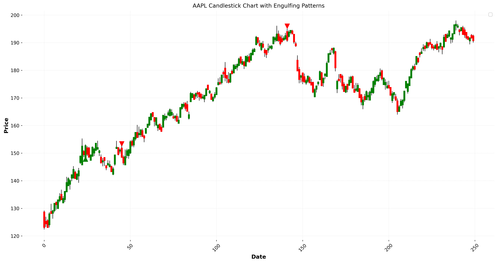
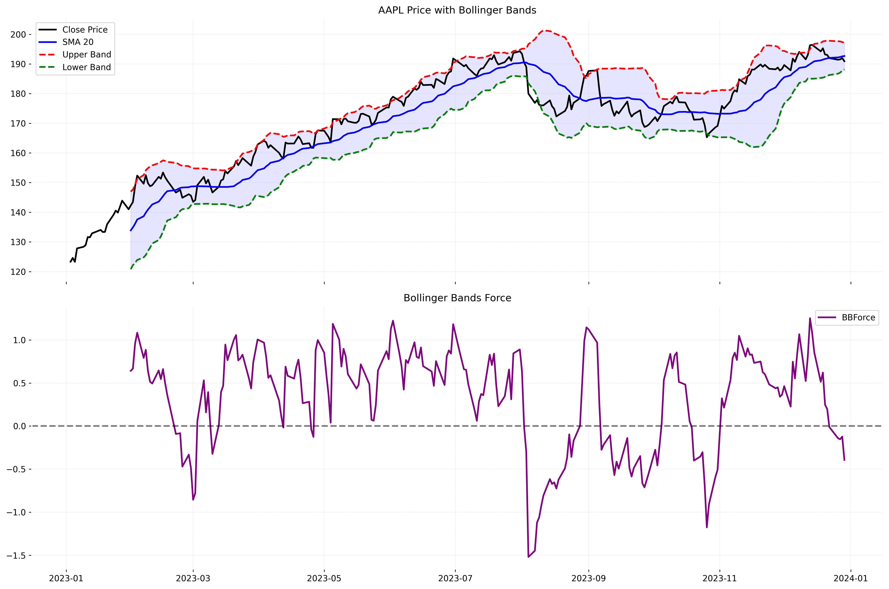
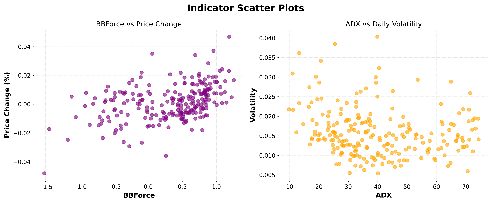

Indicator Plots and Visualizations
This page showcases the variety of charts and plots generated from the trading indicators using real AAPL stock data.
Candlestick Chart

Candlestick with Engulfing Patterns

Inside Bar Patterns

Bollinger Bands with Force

MACD with Volume Weighting

ADX with Directional Indicators

Indicator Line Charts

Indicator Bar Charts

Indicator Scatter Plots

Indicator Histograms

Correlation Heatmap

Volume Analysis